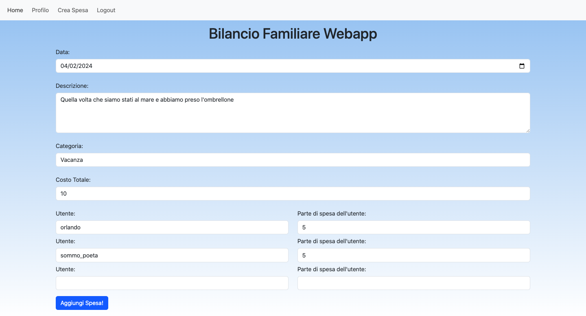
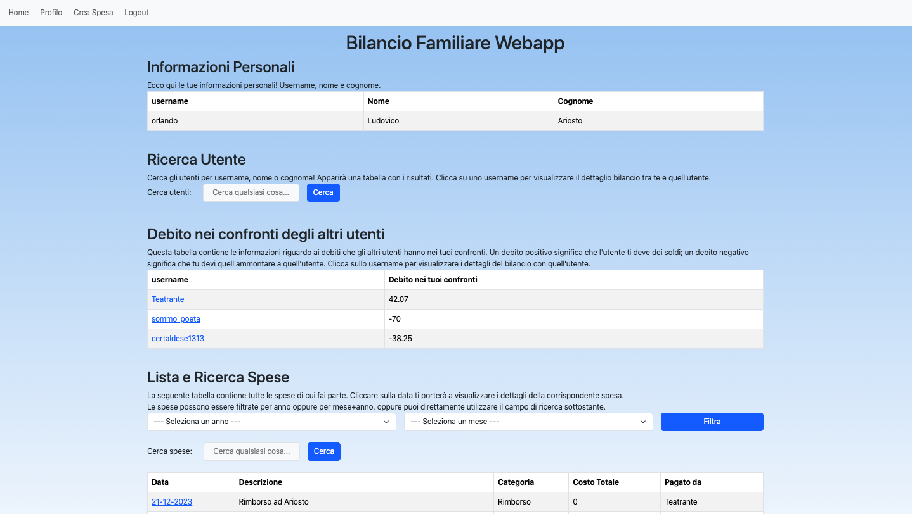
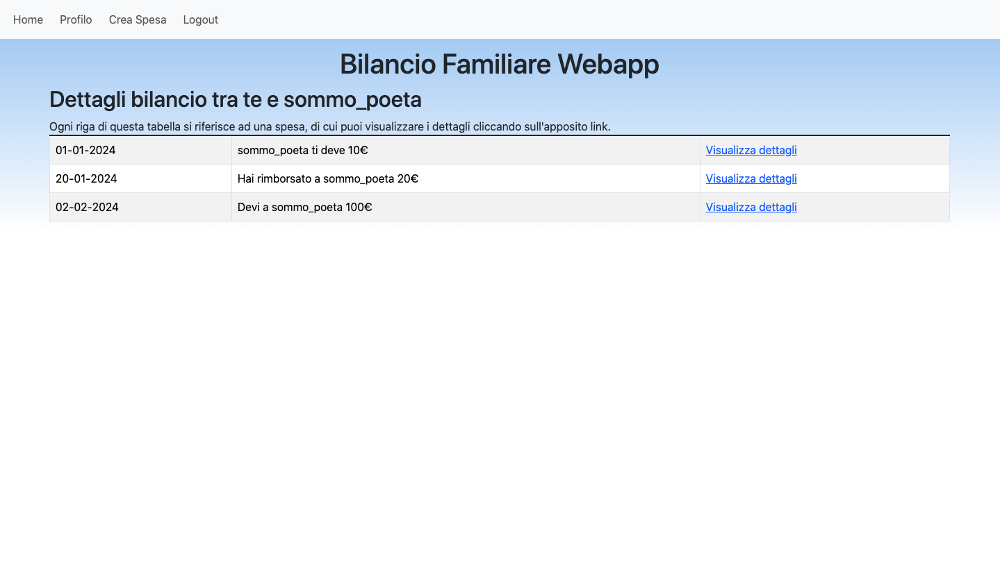
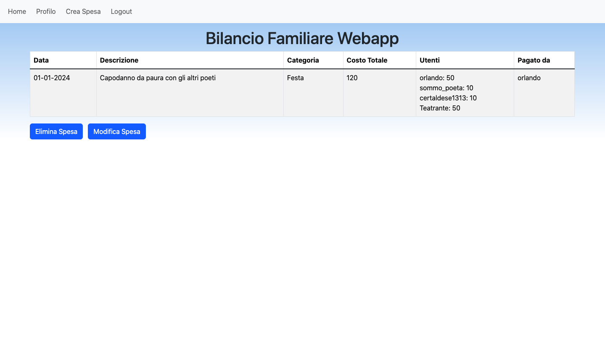

Bilancio familiare webapp è una webapp in grado di tenere traccia delle spese fatte dalla tua famiglia,
dal tuo gruppo di amici, o qualunque altro gruppo! Basta iscriversi e potrai tenere traccia delle spese
fatte e dei debiti di ogni componente del gruppo nei tuoi confronti!
Prova Bilancio Familiare Webapp subito, iscrivendosi attraverso l'apposita pagina di login!
Crea spese
Crea una spesa con facilità seguendo il link "Crea Spesa" sulla barra di navigazione.
Inserisci data, categoria e costo totale, e se vuoi scrivi anche una descrizione della tua spesa.
Magari è stata una cena con gli amici, oppure un'avventura al parco divertimenti! Qualsiasi cosa sia,
utilizza il nostro form per tenere traccia di chi deve mettere quanto per una certa
spesa!


La tua personale dashboard
Una volta loggato, puoi accedere al tuo profilo, che ti permette di visualizzare un sacco di cose!
Cerca utenti e spese e visualizza i bilanci con gli altri utilizzatori di Bilancio Familiare Webapp,
tutto dalla stessa pagina!
Dettagli dei bilanci
Se clicchi su un utente, potrai vedere lo storico di ogni spostamento di denaro che hai avuto con
quell'utente!
Questo ti permetterà di tenere traccia di tutte le spese e rimborsi in maniera semplice e veloce!


Visualizza dettagli spese
Di ogni spesa possono essere visualizzati i dettagli, con un semplice click!
Tieni le tue spese sotto controllo con Bilancio Familiare Webapp!